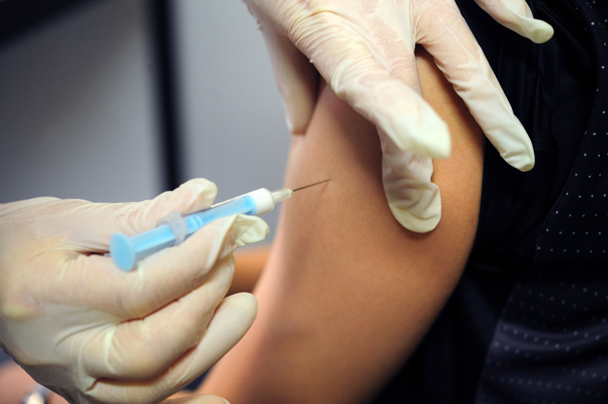
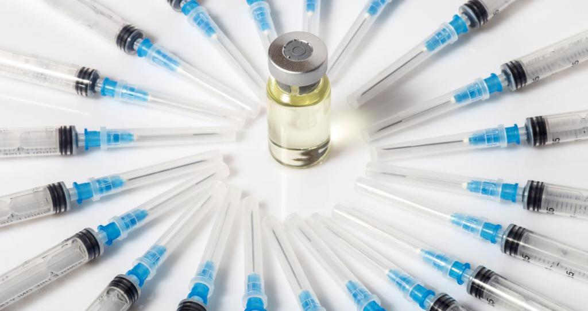

Лечение
Вакцина от гриппа – что это?
Если суммировать все эпизоды ОРВИ, то каждый человек за свою жизнь болеет, в среднем, около года. На самом деле есть эффективный способ не заболеть – сделать прививку. Противогриппозная вакцина защищает от возможного заболевания почти в 90% случаев. У остальных 10% болезнь все же может проявиться, но в более легкой форме.
Вакцина не действует против вируса сама. Она состоит из вирусных частиц. Вирус в вакцине находится в расщепленном виде, реже ее создают из уже инактивированных, но цельных вирусных частиц, а еще реже из условно "живых", но лишенных ферментов вирусов гриппа. В настоящее время почти всегда используют инактивированные вакцины, в которых нет живых вирусных частиц. После введения такой вакцины в Ваш организм попадает не сам вирус, а его фрагменты, поэтому развитие гриппа после прививки исключено.
Почему надо делать прививки каждый год?
У метода вакцинации есть один существенный недостаток – защита с помощью вакцины дает лишь временный иммунитет. Через 6 – 12 месяцев после прививки мы лишаемся защиты от гриппа, потому что количество антител в крови резко уменьшается или они исчезают вовсе. Даже если бы антитела у нас сохранялись несколько лет, вакцинацию все равно следовало бы делать каждый год, поскольку вирус мутирует, то есть видоизменяется.
Чем меньше инактивированный вирус в вакцине похож на тот, который вызвал вспышку заболевания, тем слабее действует вакцина. Поэтому, чтобы прививка эффективно защищала нас от заражения, дважды в год Всемирная Организация Здравоохранения изучает новые мутации вируса гриппа и обновляет противогриппозные вакцины, заменяя устаревшие штаммы на, если так можно выразиться, "модные" в данном сезоне.
Группа противовирусных средств
Эта группа препаратов вызывает наибольшее количество споров. Каждый производитель хочет назвать свой препарат «противовирусным», но зачастую этот термин используют неверно, и не в прямой трактовке.
Препараты должны быть эффективны в отношении определенных вирусов, но не затрагивать собственные клетки тела. Зачастую «антивирусным» свойством наделяют препараты, которые никоим образом не влияют на вирус, обладая или иммунотропным эффектом, либо действуют симптоматически, облегчая состояние.
Среди истинных противовирусных средств, которые эффективны против вирусов, можно выделить противогерпетические препараты – ацикловир, валцикловир и аналоги. Но на вирусы ОРВИ и гриппа они не влияют. Есть также препараты против ВИЧ, гепатитов, цитомегалии. Но, в отношении гриппа, доказанной эффективностью обладают римантадин и амантадин (в последнее время появились данные, что на современные штаммы уже не действует), а также озельтамивир и занамивир.